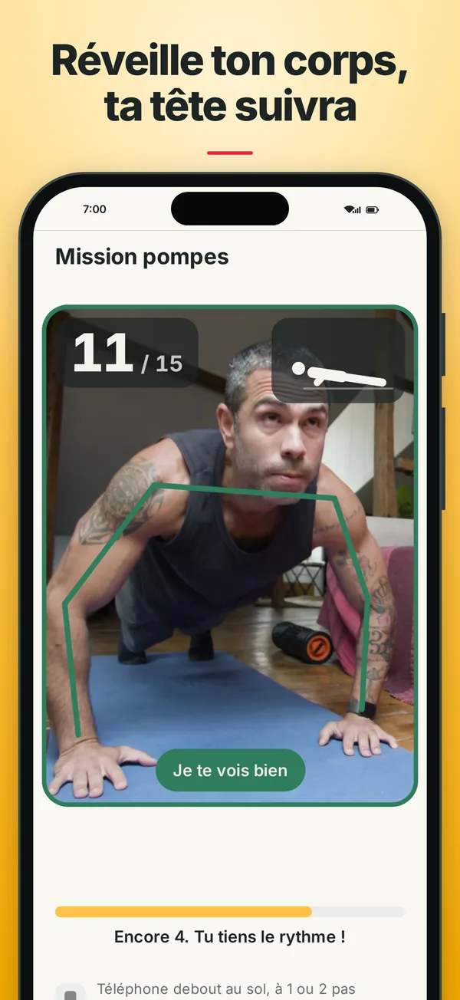
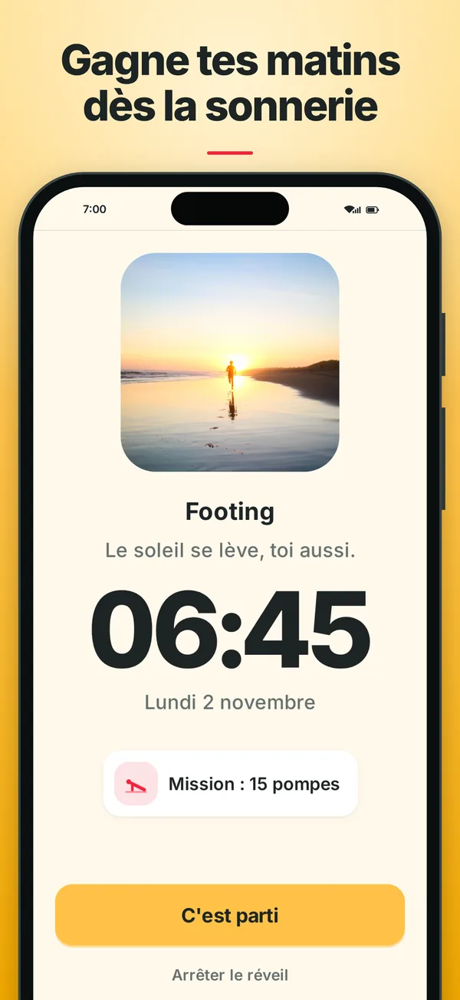
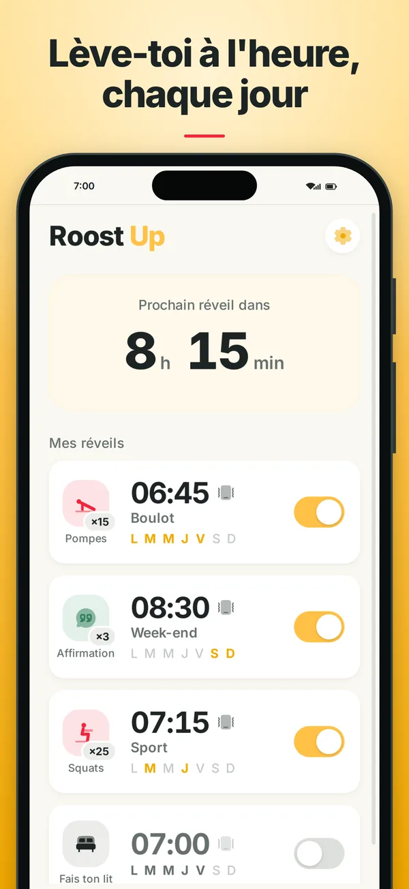
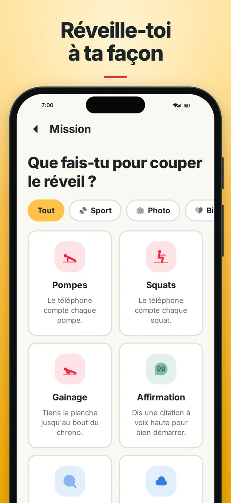
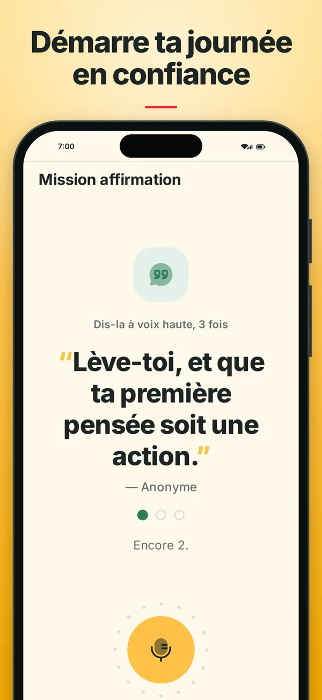
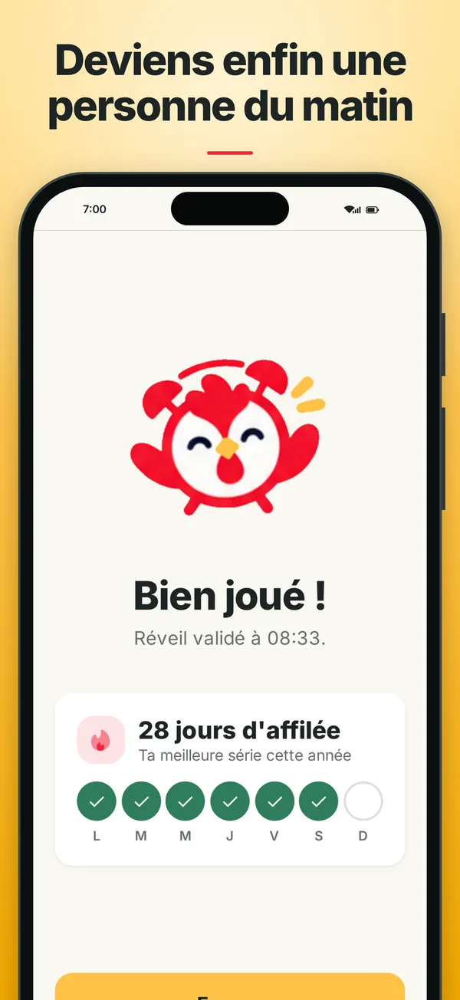

Le réveil qui ne s'éteint que quand tu te lèves
Pour couper l'alarme, il faut sortir du lit et réussir une mission : des pompes, des squats, ton lit fait en photo. Fini le snooze.
7 jours gratuits, puis abonnement.

Comment ça marche
- Tu règles ton réveilL'heure, les jours de la semaine, la sonnerie, et la mission qui l'éteindra.
- Il sonne, et il insisteMême appli fermée et téléphone verrouillé. Pas de bouton « encore 5 minutes ».
- Tu fais ta mission, deboutL'alarme s'arrête quand la mission est réussie. Ton corps est réveillé, ta journée commence.
À quoi ça ressemble





La mission qui éteint ton alarme
- PompesLe téléphone compte chaque répétition avec la caméra.
- SquatsComptés par la caméra, eux aussi.
- GainageTiens la planche jusqu'au bout du chrono.
- Fais ton litMontre ton lit fait en photo.
- Photo d'un endroitVa photographier un endroit loin de ton lit.
- Chasse aux objetsTrouve et photographie un objet tiré au hasard.
- Photo du cielPhotographie le ciel du matin.
- AffirmationDis une phrase positive à voix haute.
7 jours gratuits, puis abonnement
Le forfait annuel commence par 7 jours gratuits. Ensuite, Roost Up coûte 29,99 € par an, ou 9,99 € par mois avec le forfait mensuel (prix en France).
Le paiement passe par l'App Store ou Google Play, et l'abonnement s'arrête à tout moment depuis ton compte. Pas de compte à créer, pas de publicité.
Questions fréquentes
Comment arrêter d'appuyer sur snooze ?
Le snooze gagne parce qu'il suffit d'un doigt, les yeux fermés. La solution la plus sûre est de rendre l'arrêt de l'alarme impossible depuis le lit. Roost Up n'a pas de bouton « encore 5 minutes » : l'alarme continue tant que tu n'as pas fait ta mission, debout.
Existe-t-il un réveil qu'on éteint en faisant des pompes ?
Oui. Avec Roost Up, tu choisis un nombre de pompes ou de squats, et le téléphone compte chaque répétition avec sa caméra. L'alarme s'éteint à la dernière.
Le réveil sonne-t-il si l'appli est fermée ou le téléphone verrouillé ?
Oui. Roost Up sonne même appli fermée et téléphone verrouillé, et un réveil n'a jamais besoin d'Internet.
Mes photos et mes vidéos sont-elles envoyées quelque part ?
Non. Les images et les sons des missions sont analysés sur le téléphone, puis effacés. Roost Up n'a ni compte ni publicité. Le détail est dans la politique de confidentialité.
Roost Up est-il gratuit ?
Roost Up s'essaie gratuitement pendant 7 jours avec le forfait annuel. Ensuite, l'appli s'utilise avec un abonnement : 29,99 € par an ou 9,99 € par mois en France. Il s'arrête à tout moment depuis l'App Store ou Google Play.
Sur quels téléphones Roost Up fonctionne-t-il ?
Sur iPhone, depuis l'App Store, et sur Android, depuis Google Play.